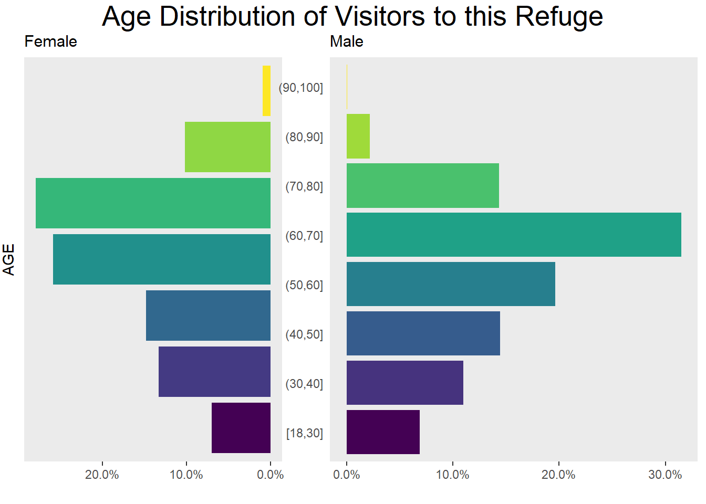

Visitor and Trip Characteristics
Visitor Characteristics
nvs2018 <- read.csv(“data/nvs2018.csv”)
library(plyr) library(dplyr) library(ggplot2) library(ggthemes) library(likert) #library(raster) library(tidyverse) #library(waffle)
function to round percentages to whole number
source(“code/functions/round_df.R”)
activities
act12 <- subset(nvs2018, select = c(WILDOB:SPEVACT)) str(act12)
names(act12) = c( “Wildlife observation”, “Bird watching”, “Photography”, “Big game hunting”, “Upland/Small game hunting”, “Waterfowl/Migratory bird hunting”, “Freshwater fishing”, “Saltwater fishing”, “Hiking/Walking”, “Jogging/Running/Exercising”, “Bicycling”, “Auto tour route/Driving”, “Motorized boating”, “Nonmotorized boating”, “Foraging”, “Picnicking”, “Volunteering”, “Environmental education”, “Interpretative program”, “Refuge special event” )
dichotlevels <- c(‘No’, ‘Yes’)
recode each factor and explicitly set the levels
for (i in seq_along(act12)) { act12[, i] <- factor(act12[, i], levels = dichotlevels) } act12Prop <- likert(act12) act12Prop act12Title <- “Activities”
act12Table <- summary(act12Prop) str(act12Table)
act12Table\(high <- round_df(act12Table\)high, 0)
act12Table[with(act12Table, order(-high)),] %>% dplyr::select (Item, high)
Primary activity
subset primary activity text
str(nvs2018\(PRIMACTCODED) nvs2018\)PRIMACTCODED[nvs2018$PRIMACTCODED == “999”] <- NA
primact <- na.omit(nvs2018$PRIMACTCODED) primact <- data.frame(primact) str(primact)
Frequency Table
primactFreq <- table(primact) primactFreq <- as.data.frame(primactFreq) primactFreq <- primactFreq[order(primactFreq$Freq, decreasing = TRUE), ] primactFreq # print table
primactProp <- prop.table(table(primact)) * 100 # cell percentages primactProp <- round_df(primactProp) # cell percentages primactProp <- as.data.frame(primactProp) primactProp <- primactProp[order(primactProp$Freq, decreasing = TRUE), ] primactProp
sum(primactProp$Freq)
re-order levels
reorder_size <- function(x) { factor(x, levels = names(sort(table(x), decreasing = FALSE))) }
primactGrp <- primact primactGrp1 <- group_by(primact) primactGrp2 <- dplyr::count(primact, primact) primactGrp3 <- mutate(primactGrp2, highlight_flag = ifelse(primact == ‘Hiking/Walking’, T, F))
primactGrp\(primact <- as.character(primactGrp\)primact)
primary activity bar graph with highlighted bar
primactBar <- primactGrp3 %>% #group_by(primact) %>% #count(primact) %>% #mutate(highlight_flag = ifelse(primact == ‘Hiking/Walking’, T, F)) %>% ggplot(aes(x = fct_reorder(primact, n), y = n)) + geom_bar(aes(fill = highlight_flag), stat = ‘identity’) + scale_fill_manual(values = c(‘#595959’, ‘orange’)) + coord_flip() + labs(x = ‘Primary Activity’ ,y = ‘Number of Participants’ ,title = str_c(“Most visitors to this refuge” , “in Hiking/Walking”) ) + #theme with white background theme_bw() + theme(text = element_text(color = ‘#444444’) ,plot.title = element_text(size = 18, face = ‘bold’) ,legend.position = ‘none’ ,axis.title = element_text(face = ‘bold’) ,axis.title.y = element_text(angle = 90, vjust = .5) #eliminates background, gridlines, and chart border ,plot.background = element_blank() ,panel.grid.major = element_blank() ,panel.grid.minor = element_blank() ,panel.border = element_blank() ) primactBar
Visitor Center
summary(nvs2018$VISCEN)
nvs2018[“VISCEN”] <- lapply(nvs2018[“VISCEN”] , factor)
vcAct <- subset(nvs2018, select = c(ASKINFO:OTHERVIS)) summary(vcAct)
vcOther <- na.omit(nvs2018$OTHERVISTXT)
vcOther <- sort(vcOther)
vcOther
nvs2018[“TRIPPURP”] <- lapply(nvs2018[“TRIPPURP”] , factor)
Group composition
group <- subset(nvs2018, select = c(ADULTNUM:MINORNUM))
groupsize <- rowSums (group, na.rm = TRUE, dims = 1) groupsize range(groupsize) #OSU cleanup 43814
groupsizeProp <- prop.table(table(groupsize)) * 100 groupsizeProp str(groupsizeProp)
single <- round_df(groupsizeProp[“1”], 0) single #percent that were alone
group <- data.frame(groupsizeProp) #convert to data frame group <- subset(group, groupsize != “1”) #groupsize greater than 1 group <- round_df(sum(group$Freq), 0) #add proportions for groups greater than 1 group #percent that were in a group
adults <- prop.table(table(nvs2018$ADULTNUM)) * 100 adults
Group composition - Locals
localgrp <- subset(nvs2018, LOCALAREA == “Local”, select = ADULTNUM:MINORNUM) str(localgrp) localgrp <- na.omit(localgrp) range(localgrp$ADULTNUM) range(localgrp)
localgrp\(grpSize <- rowSums (localgrp, na.rm = TRUE) range(localgrp\)grpSize) localgrpSize <- round_df(mean(localgrp$grpSize)) localgrpSize
Group composition - Nonlocals
nonlocgrp <- subset(nvs2018, LOCALAREA == “Nonlocal”, select = ADULTNUM:MINORNUM) head(nonlocgrp) nonlocgrpSize <- rowSums (nonlocgrp, na.rm = TRUE) range(nonlocgrpSize) nonlocgrpSize <- subset(nonlocgrpSize, nonlocgrpSize < 999) range(nonlocgrpSize) nonlocgrpSize <- round_df(mean(nonlocgrpSize)) nonlocgrpSize
Visits to Public Lands
This NWR
nvs2018\(REFLASTYR[nvs2018\)REFLASTYR == “999”] <- NA str(nvs2018\(REFLASTYR) nvs2018\)REFLASTYR <- as.numeric(nvs2018\(REFLASTYR) refLast12 <- na.omit(nvs2018\)REFLASTYR) mean(refLast12) summary(refLast12) refLength = length(refLast12[refLast12]) refOne = round_df(length(refLast12[refLast12 == 1]) / refLength * 100) refTwo = round_df(length(refLast12[refLast12 == 2]) / refLength * 100)
Other NWRs
nvs2018\(NWRLASTYR[nvs2018\)NWRLASTYR == “999”] <- NA str(nvs2018\(NWRLASTYR) nwrLast12 <- as.numeric(nvs2018\)NWRLASTYR) nwrLast12 <- na.omit(nwrLast12) mean(nwrLast12) summary(nwrLast12) nwrLength = length(nwrLast12[nwrLast12]) nwrZero = round_df(length(nwrLast12[nwrLast12 == 0]) / nwrLength * 100) nwrOne = round_df(length(nwrLast12[nwrLast12 == 1]) / nwrLength * 100) nwrTwo = round_df(length(nwrLast12[nwrLast12 == 2]) / nwrLength * 100)
Other Public Lands
nvs2018\(OTHPUBLASTYR[nvs2018\)OTHPUBLASTYR == “999”] <- NA str(nvs2018\(OTHPUBLASTYR) nvs2018\)OTHPUBLASTYR <- as.numeric(nvs2018\(OTHPUBLASTYR) othLast12 <- na.omit(nvs2018\)OTHPUBLASTYR) mean(othLast12) summary(othLast12) othLength = length(othLast12[othLast12]) othZero = round_df(length(othLast12[othLast12 == 0]) / othLength * 100) othOne = round_df(length(othLast12[othLast12 == 1]) / othLength * 100) othTwo = round_df(length(othLast12[othLast12 == 2]) / othLength * 100)
nvs2018 %>% dplyr::select(REFLASTYR:OTHPUBLASTYR) %>% na.omit -> visits str(visits) range(visits)
visits[visits > 10 & visits <= 20] <- “11-20” visits[visits > 20 & visits <= 49] <- “21-49” visits[visits > 50 & visits <= 99] <- “50-99” visits[visits > 100 & visits <= 199] <- “100-199” visits[visits > 200 & visits <= 299] <- “200-299” visits[visits > 300 & visits <= 399] <- “300+”
names(visits) = c(“This Refuge”, “Other NWRs”, “Other Public Lands”) str(visits)
visit_levels <- names(visits)[order(visits)] str(visits)
Season
season <- subset(nvs2018, select = c(SPRVIS, SUMVIS, FALLVIS, WINTVIS)) str(season) season\(SPRVIS <- as.factor(season\)SPRVIS) season\(SUMVIS <- as.factor(season\)SUMVIS) season\(FALLVIS <- as.factor(season\)FALLVIS) season\(WINTVIS <- as.factor(season\)WINTVIS) seasonL <- likert(season) seasonT <- summary(season) str(seasonT) seasonT
nvs2018 %>% select(SPRVIS:WINTVIS) %>% na.omit -> season str(season)
names(season) = c(“Spring”, “Summer”, “Fall”, “Winter”) str(season)
season_levels <- names(season) season_levels # notice the changed order of factor levels
season %>% gather(key = items, value = answer) %>% mutate(answer = factor(answer), items = factor(items)) -> season2
season2\(items <- factor(season2\)items, levels = season_levels)
seasonBar <- ggplot(season2, aes(x = items)) + geom_bar(aes(fill = answer), position = “fill”, show.legend = FALSE)+ coord_flip() + scale_x_discrete(limits = rev(levels(season2$items))) + labs(y = “Percent Visited in Last 12 Months”, x = “Season”) + scale_fill_brewer(palette = “Greens”) + scale_color_manual()
seasonBarDemographics
Visitors to this refuge can be characterized as follows:
- 51% male (with an average age of 56 years) and 44% female (with an average age of 54 years)
- 16 years of formal education (equivalent to College)
- $50,000-$74,999 median level of income
See (AppendixB) for more demographic information.
TableGrob (2 x 2) “arrange”: 3 grobs z cells name grob 1 1 (2-2,1-1) arrange gtable[layout] 2 2 (2-2,2-2) arrange gtable[layout] 3 3 (1-1,1-2) arrange text[GRID.text.852]
TODO: Line up age categories